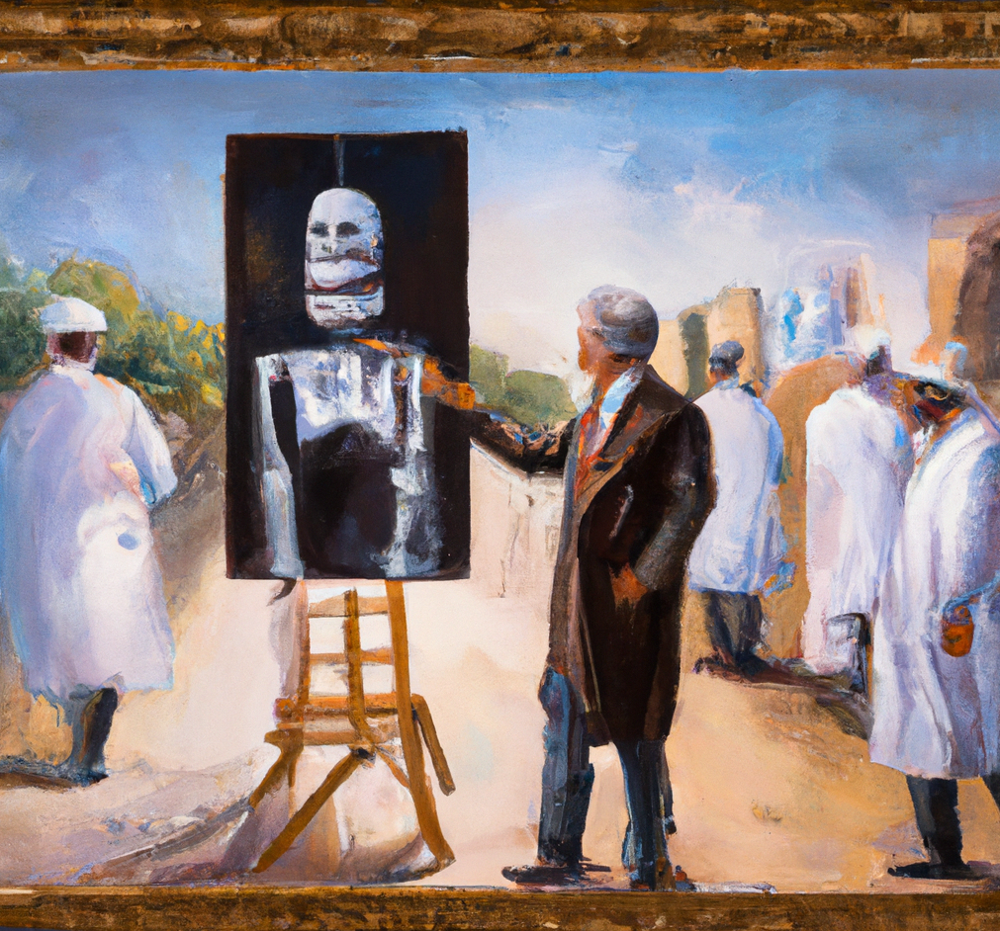

Why AI will never replace the radiologist
Recently, there have been many discussions about the use of artificial intelligence (AI) in radiology and its potential to replace radiologists. While AI is a powerful tool, I believe that it will never replace the radiologist.
AI is great at recognizing patterns, but it still relies on a human being to interpret the data and make a diagnosis. A radiologist must understand the patient's medical history, the particular imaging modality used, and the subtle differences between the images. This is something that AI can't do.
Even with advances in AI technology, radiologists are still needed to look at scans and make sure the AI has not missed something. AI can't detect subtle changes in tissue or recognize patterns that may indicate a disease. It's important to have a human being look at the images and make sure that everything looks as it should.
That said, AI can be a great tool for radiologists. It can help speed up the diagnosis process by looking for patterns and flagging images that may need further investigation. AI can also be used to look for signs of disease in a large number of scans, something that would be impossible for a radiologist to do manually.
In conclusion, AI will never replace the radiologist, but it can be a powerful tool to help them in their work. AI can help speed up the diagnosis process, but it still relies on the radiologist to make the final diagnosis.